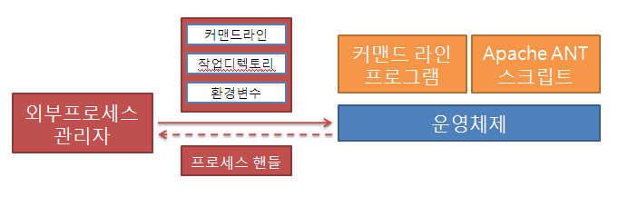
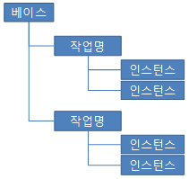

외부 프로세스 호출 모듈.
시스템 자원을 많이 이용하는 경우 자바 가상머신의 안정성에 문제를 일으킬 수 있기 때문에 별도의 프로세스로 분리해야할 필요가 있다. 자바에서는 외부 프로세스 호출 API들은 있으나, 이에 대한 로그 파일, 상태 처리, 모니터링에 대한 표준화된 프로세스가 없어 매번 비슷한 모듈을 만들고 있기에, 표준 호출 및 통제, 모니터링 체제를 만들게 되었다.


데이터베이스 접속정보 등은 스크립트 파일 소스 노출이 데이터베이스 보안에 위협이 될 수 있다면 환경 변수로 파라미터화하여 외부 프로세스 실행기에서 환경변수를 주입하여주도록 한다.
여기서 환경변수는 JVM 파라미터가 될 수도 있고, OS의 환경변수가 될 수도 있다. (전자에 우선순위가 있다.)
작업별 환경변수는 작업 환경 설정파일에 기록이 되어 노출될 수 있다. 작업을 수동으로 시작할 때 adhocEnvironment를 지정하거나, 파일 보안을 강화하거나, 다음에 기술된 글로벌 환경변수를 이용하도록 한다.
어떤 설정 파일에도 남지 않으며, 별도의 EnvMapPopulator에 의해 설정된다. 여기서 지정된 환경변수는 해당 오퍼레이터의 모든 작업에 적용된다.
데이터베이스 접속 계정 정보 등 파일로 남기고 싶지 않은 설정에 이용할 수 있다.
UNIX인 경우 외부 프로세스는 WAS의 실행 계정 소유로 실행되며, 로그 파일도 해당 계정 소유로 생성된다.
작업이 수행되기 전에 모든 작업에 공통으로 해당하는 환경 변수 등이 들어있다.
커맨드라인, 또는 Apache Ant 스크립트 등을 실행시킬 수 있다.
커맨드라인 파라미터, 환경변수, 작업 디렉토리를 설정할 수 있다.
작업 인스턴스 (실행시 생성)별로 환경변수를 지정할 수도 있다.
모든 작업은 성공 또는 실패 상태로 나뉘어진다.
표준 출력 및 에러 출력은 하나로 취급되어 한 파일 (stdout.log)로 기록된다.
커맨드라인 프로세스의 경우 해당 프로세스의 종료 코드가 0이면 성공으로 처리된다.
Apache Ant 프로세스의 경우 BUILD FAILURE 문자열이 나타나면 실패로 처리된다.
모든 유스케이스는 ExternalProcessOperator를 통해 처리된다.
단, 일부 디렉토리 작업은 위 객체를 통한 JobDirectoryManager를 통해서 이루어진다.
위 API에 대한 자세한 설명은 각각의 javadoc에서 확인한다.
외부 프로세스로는 쉘스크립트, ANT 빌드 스크립트 등이 가능하다.
수시로 변경/재시작이 잦은 웹 애플리케이션이라면 외부 프로세스 실행/모니터링을 위한 본 시스템은 별도의 인스턴스를 가져가도록 하여, 중단으로 인한 로그 파일 분실 등을 방지하도록 하고, RMI 등의 리모팅 서비스를 이용하여 컨트롤 하도록 하는 것이 좋다.
윈도우에서는 작업 종료가 제한적이다. ant.bat처럼 배치 파일등에서 서브 프로세스로 자바 프로세스를 실행시키도록 하는 경우 등에는 자바 프로세스에 대한 참조가 되지 않아 작업 종료가 되지 않는다.
Unix 계열에서는 이러한 문제가 발생하지 않는다.